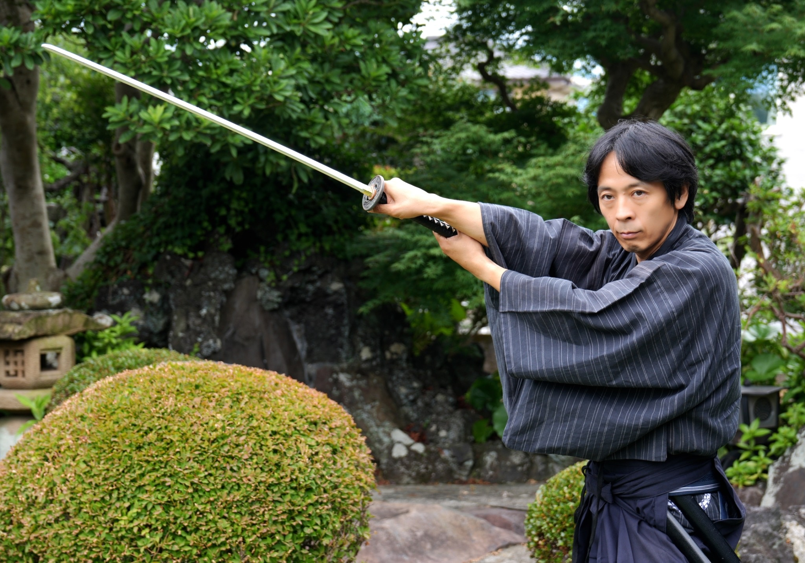
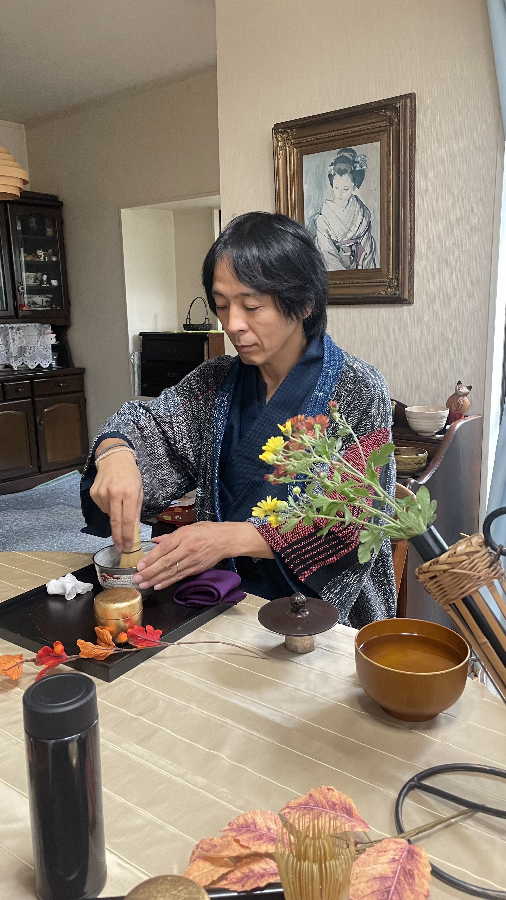

殺陣とお茶のサムライ数秘術家
福田 ひろし
Hiroshi Fukuda
scroll
殺陣師
自在流呼吸法・息道 提唱者
カバラ式口伝数秘術鑑定家
福和倭迅会 代表
小劇団にて活動。舞台を拠点に、声優・ステージパフォーマー・ステージMC・インターネットTVパーソナリティなども行う。並行して、様々な現場・職種を経験。
殺陣と出会い、本格的に取り組み始める。日本俳優連合 アクション部会 殺陣上級ライセンスを取得。表現としての刀を追求する。
殺陣・呼吸・茶・数秘を統合した活動の場として、福和倭迅会を設立。
2022年に胃がんが発覚、2023年に部分胃切除手術を受ける。この経験が、呼吸と身体への向き合い方を深めるきっかけとなり、自在流呼吸法・息道の体系化へと繋がる。
殺陣道場・テーブル茶道ワークショップ・カバラ式口伝数秘術鑑定・自在流呼吸法・息道を展開。箱根遊船「大茶会」にてお点前体験を不定期開催。マルシェ等での活動も精力的に行う。


